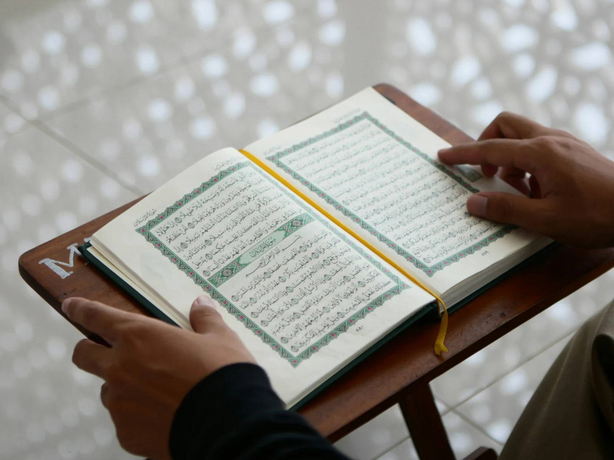

Foundation Course
The essentials of Islam from the ground up — belief, worship and the big questions — in clear, unhurried lessons.
View the course →
A short, honest introduction to what Muslims believe and do — and an open invitation to bring the rest of your questions to the masjid in person.
Photo: Masjid MABA / Unsplash
The foundations
Islam means willing submission to Allah — the one God who created everything and everyone. Muslim belief rests on six articles of faith:
Belief in Allah — one God, the creator, uncreated, without partners.
Belief in His angels.
Belief in His books — the Qur’an, and earlier scriptures including the Torah, Psalms and Gospel.
Belief in His messengers — including Nuh, Ibrahim, Musa, Dawud, ‘Isa and Muhammad (peace be upon them all).
Belief in the Day of Judgement.
Belief in divine decree — nothing happens outside Allah’s knowledge and will.
The practice
Islam’s five pillars are the everyday framework of Muslim practice:
Bearing witness that there is no god but Allah, and that Muhammad is His messenger.
The five daily prayers.
An annual charitable contribution, calculated on certain wealth.
Fasting from dawn to sunset in the month of Ramadan.
The pilgrimage to Makkah, once in a lifetime for those who are able.
أَشْهَدُ أَنْ لَا إِلَٰهَ إِلَّا ٱللَّٰهُ وَأَشْهَدُ أَنَّ مُحَمَّدًا رَسُولُ ٱللَّٰهِ
“I bear witness that there is no god but Allah, and I bear witness that Muhammad is the Messenger of Allah.”
Learn at your own pace
A page like this can only introduce Islam. For a proper, guided path we recommend our da’wah partner IntroToIslam — an Australian team whose online courses are free, self-paced, and written for people starting from zero. They also run weekly classes in person and on Zoom.
The essentials of Islam from the ground up — belief, worship and the big questions — in clear, unhurried lessons.
View the course →Meet the man himself: the life, character and message of the final messenger, told from the sources.
View the course →Honest answers
No. You are welcome to visit, observe, and ask questions with no expectation of anything more. See our visiting guide.
Muslims love and honour ‘Isa (peace be upon him). The Qur’an teaches that he is a mighty prophet and the Messiah, born miraculously to Maryam (peace be upon her) — a servant and messenger of Allah, not divine. Read Maryam in Islam for her story as the Qur’an tells it.
No. Islam is Allah’s guidance for all people, and most Muslims worldwide are not Arab. Our congregation brings together families from many countries of origin, as well as Australian-born Muslims of every background.
See our new-Muslim support page. The declaration itself is simple, and the masjid will stand with you before and after it — call the office and we will arrange everything.
More support · Ask ICV
The Islamic Council of Victoria’s free Ask ICV service finder lists new-Muslim and convert support, community groups and more.
You are welcome here
Come along to Masjid Maryam, meet the Imam, and ask anything at all — no pressure, no expectations. If you’re ready to take your Shahada, we would be honoured to help.